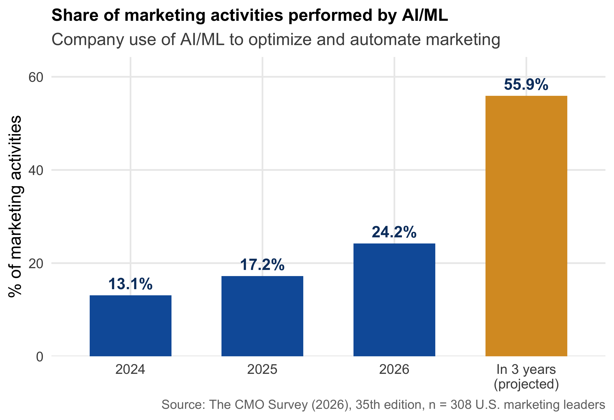
1 Marketing Analytics as Decision-Making
This chapter lays the foundation for everything that follows in this course. Its goal is not to teach you a statistical method — no R output and no tests will appear on the following pages, and the only formula is a simple difference of differences. Instead, this chapter will equip you with a way of thinking about data that separates good analysts from dangerous ones: the ability to recognize which question you are actually asking, what your data can and cannot tell you, and why two analyses that look identical can support completely different conclusions. After working through this chapter you will be able to:
- Distinguish the four types of questions that analytics can answer — descriptive, predictive, causal, and prescriptive — and explain why most managerial decisions ultimately depend on the causal one
- Explain what a counterfactual is and why causal claims are always claims about counterfactuals
- Recognize the roles that variables can play in an analysis: outcome, treatment, confounder, mediator, and moderator — and recognize selection bias when you see it
- Explain why randomization licenses causal conclusions — and what must be assumed when we work with data that were not randomized
- Explain the logic of quasi-experiments and of the difference-in-differences comparison
- Translate a vague management problem into a precise, answerable research question
Everything else in this course — summary statistics, standard errors, tests, regression, mediation and moderation analysis — exists to serve the ideas in this chapter.
1.1 Motivation: data and AI in marketing
The task of allocating marketing budgets effectively has always been plagued by uncertainty. As the nineteenth-century Philadelphia retailer John Wanamaker supposedly said:
“Half the money I spend on advertising is wasted; the trouble is I don’t know which half.”
— John Wanamaker
More than a century later, the underlying problem is unchanged — but the environment has been transformed. Every purchase, click, swipe, share, and like leaves a trace, and most firms today sit on far more behavioral data than they are able to use. Three developments make analytical skills more important for marketers today than ever before.
1.1.1 Marketing is reorganizing around AI and data
According to the 35th edition of The CMO Survey (Moorman 2026), a survey of 308 U.S. marketing leaders, AI and machine learning already perform about a quarter of all marketing activities — nearly twice the share of two years earlier (Figure 1.1). Generative AI alone grew from 7.0% to 22.4% of marketing activities over the same period (+220%). And marketing leaders expect more than half of all marketing work to be performed by AI within three years. The activities that lead the adoption list — content creation, personalization, data analysis and reporting, targeting — are the mechanical layer of marketing work.
1.1.2 … while budgets are flat: every euro must justify itself
Total marketing spending grew by only 1.7%, the weakest growth since 2021, while 15.3% of marketing budgets now go to AI initiatives (Moorman 2026; Gartner 2026). Asked why their organizations invest in marketing capabilities, 78.2% of marketing leaders name the goal of achieving a higher return per marketing dollar as the most important reason (Moorman 2026). Gartner’s 2026 CMO Spend Survey of 401 CMOs in North America and Europe sums up the situation:
“CMOs are being asked to deliver growth, efficiency and transformation without meaningful budget expansion. Those who succeed will make deliberate, data-driven trade-offs.”
— Gartner CMO Spend Survey (2026)
Flat budgets combined with rising expectations are exactly the environment in which measurement wins arguments: analytics is how a marketer defends a budget.
1.1.3 The scarce skill is judgment
70% of CMOs consider becoming an AI leader a critical goal — but only 30% say their organization is ready to scale AI capabilities (Gartner 2026). The labor market data point in the same direction: in the World Economic Forum’s Future of Jobs Report 2025, analytical thinking is the most important core skill (seven out of ten employers consider it essential), and AI and big data are the fastest-growing skills for 2025–2030 (World Economic Forum 2025).
This has an important implication for what you should take away from this course. The bottleneck in modern marketing organizations is rarely the production of numbers — dashboards, tracking tools, and, increasingly, AI assistants produce numbers in abundance and at almost no cost. The mechanical layer of marketing is being automated; what remains scarce is judgment: knowing which analysis answers which managerial question, what a given number does and does not license you to conclude, and where an analysis can silently go wrong. That judgment is what this course trains. The story in the next section shows what happens when it is missing — even at a company with world-class data and world-class analysts.
1.2 Case study: search advertising at eBay
1.2.1 eBay, 2012: what the dashboards showed
Around 2012, eBay was spending roughly $50 million per year on paid search advertising — the sponsored links that appear above the results on Google, Bing, and Yahoo! when users search for terms like “used gibson les paul” or simply “ebay”. Was that money well spent?
The data seemed to leave little doubt. Users who were exposed to eBay’s search ads purchased far more than users who were not — Figure 1.2 shows a stylized version of this comparison, with each dot representing one user. Measured this way, the return on advertising looked spectacular — the kind of number that makes a budget discussion very short. (Aggregate patterns told the same story: weeks with more advertising were weeks with more sales — a correlation with problems of its own, to which we return in Section 1.4.)
NoteUnder the hood: where the naive numbers came from
The “spectacular returns” were produced by click-based attribution, the standard accounting of online advertising to this day: when a user clicks a paid link (recorded via a tracking parameter) and purchases within a set time window, the revenue is attributed to the ad. Attributed revenue divided by ad spend then yields the return figure shown in campaign dashboards. Notice what this measures: how much revenue flowed through ad clicks — not how much revenue the ads caused. For a user who searched “ebay” with the intent to buy, the purchase is attributed in full, even though she would have reached the site via the free organic link directly below the ad. Whenever you see a “ROAS” number in an advertising dashboard, this is how it was computed — and the eBay experiments showed how far it can be from a causal effect: when brand-keyword ads were switched off, organic clicks absorbed about 99.5% of the paid traffic (Blake et al. 2015).
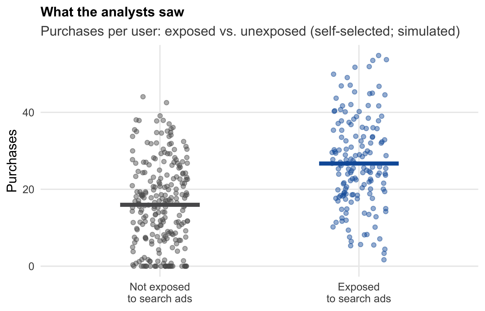
Before reading on, pause for a moment and ask yourself: as eBay’s CMO, would you sign off on next year’s $50 million based on this evidence? And if not — how would you measure the payoff instead?
1.2.2 What happened when the ads were switched off
Here is what happened next. A team of economists working inside eBay ran a series of large-scale field experiments (Blake et al. 2015). First, eBay halted all brand-keyword ads (queries containing “ebay”) — in March 2012 on Microsoft’s search engine, with Google serving as a comparison, and in summer 2012 on Google itself. If the ads were driving the attributed sales, traffic and sales should have collapsed.
They barely moved: paid clicks fell to zero, but about 99.5% of that traffic instantly reappeared through the free organic link sitting directly below where the ad had been; total visits to eBay were essentially unchanged. The users who had clicked the ad for “ebay” were people who had searched for eBay — on their way to the site anyway. The attributed revenue had been almost entirely re-labeled, not created. Second, for non-brand keywords (“used guitar”, “cheap shoes”), eBay suspended all search advertising in a randomly selected ~30% of US regions for 60 days and compared the change in total sales against the remaining regions — a real comparison group, created by design. The ads turned out to influence only new and infrequent users, while the frequent shoppers who generate most clicks (and most ad cost) were unmoved. The customers most likely to click were the customers least influenced — and averaged over everyone, the returns on the spending were negative.
1.2.3 Why the dashboard and the experiment disagree
Take a moment to appreciate what went wrong here — because it was not a lack of data, computing power, or intelligence. The naive analysis compared people with purchase intent (those who searched and saw the ad) to people without purchase intent (those who never searched) and credited the entire difference to the advertising. Figure 1.3 makes this structure explicit: purchase intent drives both who sees the ads and who buys. The dashboard’s correlation mixes the ad effect with the intent difference — and in this case, intent was nearly the whole story. The problem was not the math; it was the comparison. And no amount of additional data would have fixed it: more data would only have made the wrong answer more precise.
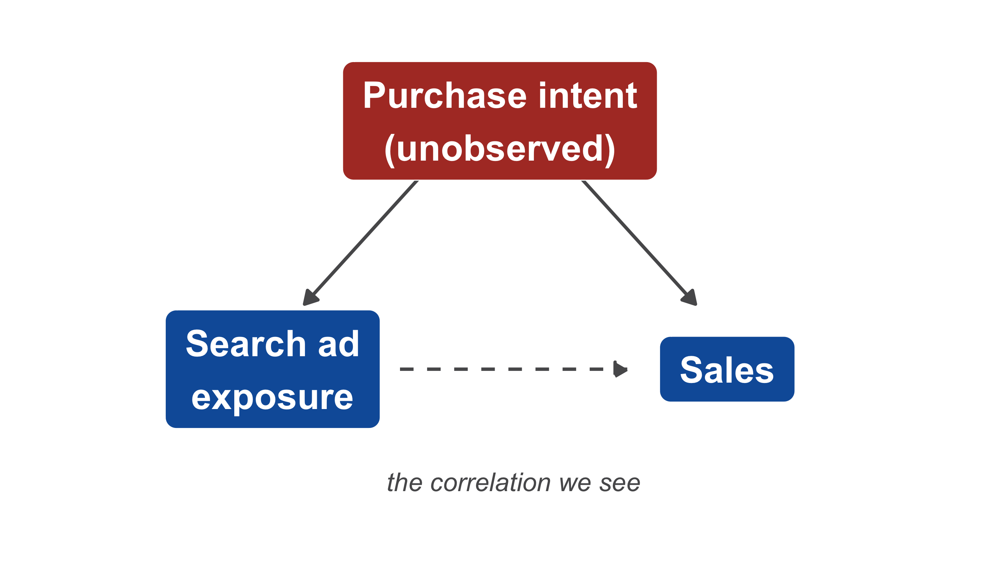
1.2.4 The comparison that matters
The comparison eBay actually needed is summarized in Table 1.1.
| What eBay observed | What the decision needs | |
|---|---|---|
| Group A | Users arriving via paid search | The same users, with ads |
| Group B | Users arriving via other channels | The same users, without ads |
| The difference measures… | Ad effect + intent difference | The ad effect. Nothing else |
ImportantThe counterfactual
The question eBay actually needed to answer was: what would our sales have been without the ads — everything else unchanged? This hypothetical alternative world is called the counterfactual. A causal claim (“the ads increased sales by X”) is always a comparison between the world we observed and a counterfactual world we did not observe. Since we can never observe both worlds at once, all of causal inference is about constructing a credible stand-in for the counterfactual — and how well such a stand-in can be constructed depends on how the data came into being. The exposed and unexposed users in eBay’s data were not credible stand-ins for one another — they differed in exactly the characteristic that mattered most (intent). The experiment’s randomly switched-off regions were credible stand-ins. That single difference was worth about $50 million a year.
This story sets the agenda for the entire course. To avoid eBay’s mistake, you need to know which type of question you are asking (Section 1.3), how your data came into being (Section 1.4), which variables are playing which roles (Section 1.5), and why randomization has the special status it has (Section 1.6).
1.3 Types of research questions
1.3.1 Every analytics task answers one of four questions
Every analytics task you will encounter — in this course and in your career — answers one of four kinds of questions. This classification, adapted from Hernán et al. (2019), is the single most useful piece of structure you can impose on any analytics problem, and we will return to it at the start of every session of this course.
| Question | Type | Typical marketing examples | |
|---|---|---|---|
| 1 | What is going on? | Descriptive | How large are our customer segments? What is our churn rate? Where in the funnel do we lose users? |
| 2 | What will happen? | Predictive | Which customers are likely to churn next quarter? How much demand should we expect next month? |
| 3 | What happens if we act? | Causal | Does the discount cause additional sales? Did the campaign work? |
| 4 | What should we do? | Prescriptive | Which price should we set? How should we allocate the budget across channels? |
Descriptive questions ask you to capture and compactly represent the structure of your data: summarizing, visualizing, segmenting. Descriptive analysis is where every project starts — you cannot model data you do not understand — and it is the subject of Module 2.
1.3.2 Prediction ≠ causation: same data, different questions
Predictive questions ask you to forecast an unknown outcome from known inputs. The defining feature of prediction is that you do not need to understand why the inputs relate to the outcome; you only need the relationship to be stable. If customers who read your newsletter churn 40% less, then newsletter readership is a useful churn predictor — even if the newsletter itself does absolutely nothing, because readership may simply reveal engagement. For targeting purposes (“flag the non-readers as churn risks”), that is perfectly fine.
Causal questions ask what an intervention would change: they compare the observed world to a counterfactual. This is a fundamentally harder question, because the counterfactual is unobservable. Note the contrast with prediction: the newsletter’s predictive value tells you nothing about whether sending more newsletters would reduce churn. That would only follow if readership causes retention — and engaged customers both read newsletters and stay, whether or not the newsletter does anything.
Prescriptive questions — what should we do? — are the questions managers are actually paid to answer. And here is the crucial link: prescription requires causation. To choose between actions, you must know what each action would cause; that is, you must compare counterfactuals. A prediction, however accurate, is not a basis for action on the predicted variable itself. Confusing question 2 with question 3 — using a predictive relationship as if it described the effect of an intervention — is precisely the eBay mistake, and it is the most common serious error in applied analytics.
1.3.3 Four types of questions, four kinds of analytics
Table 1.3 shows what each type of question demands from the data and which methods typically answer it — using the same online store in every column. Notice the second row: the four questions differ not only in their methods but in what the data must contain. For a causal question without an experiment, the data must contain the relevant confounders — the row in which the eBay case lived. And notice the last column: prescription consumes causal answers. You cannot optimize targeting on correlations; eBay’s dashboard was, implicitly, a prescriptive claim (“keep spending”) built on a broken causal one.
| Description | Prediction | Causal inference | Prescription | |
|---|---|---|---|---|
| Typical question | How can our customers be grouped into segments based on their characteristics? | Which of last year’s visitors will purchase from our store next month? | Does behavioral targeting increase the probability of purchase — and by how much? | Which customers should we target, at what budget, to maximize profit? |
| What the data must contain | Features: user characteristics (age, location, …), products viewed, … | Inputs (features) and the output to be predicted (purchase next month) | Outcome, treatment, and — without an experiment — the relevant confounders | Causal effect estimates plus costs, margins, and constraints |
| Typical analytics | Cluster analysis, descriptive statistics, visualization | Regression, trees, random forests, neural networks | Randomized experiments; regression, difference-in-differences, instrumental variables, regression discontinuity | Targeting & uplift models, optimization, simulation |
NoteWhy this course is structured the way it is
Because most managerial questions are ultimately causal, this course devotes most of its time to the question of when a comparison supports a causal conclusion. Modules 2–3 build the descriptive and statistical foundations; Modules 4 and 5 then work through the two main ways of earning a causal claim — experiments and adjusted observational comparisons — and Module 6 asks why and for whom an effect occurs (mediation and moderation). Prescription is not a separate module: it runs through how we interpret results and through the group project, where every analysis ends in a recommendation. Prediction is acknowledged but not covered in depth — for an excellent introduction, see An Introduction to Statistical Learning.
TipPractice: classify these questions
Which type of question is being asked? (a) “Which ad creative will get the highest click-through rate?” (b) “How large is our Gen-Z segment?” (c) “Should we raise the price by 5%?”
1.4 Correlation and causation
1.4.1 Did Internet Explorer prevent murders?
Consider Figure 1.4. Between 2006 and 2011, the market share of Microsoft’s Internet Explorer and the number of murders in the US fell in almost perfect lockstep — the correlation between the two series is about 0.98. Did the decline of Internet Explorer prevent murders?
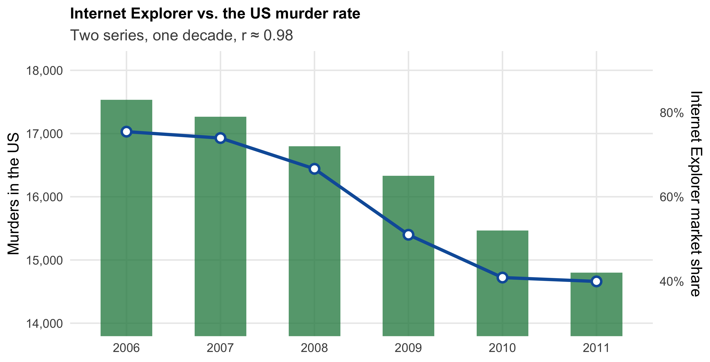
Obviously not. This is a spurious correlation: two variables move together without any causal link — here simply because both trend in the same direction over time. Any two trending quantities correlate, and hundreds more examples of this kind can be found in the spurious correlations collection. Correlation is cheap; causation is not.
The chart teaches a second lesson, too. Look at the two y-axes: their ranges were chosen so that the two series overlap. With a dual axis, you can manufacture a picture like this for almost any two declining series — a small visualization crime, committed deliberately here, to which we return in Module 2 when we discuss honest visualization.
1.4.2 Two pictures of “X relates to Y”
The Internet Explorer example is easy to see through. Most real cases are not. Consider the two panels in Figure 1.5, which both concern the same newsletter. Panel (a) shows the result of an email holdout test: the firm randomly withholds the newsletter from part of its subscriber list and compares the subsequent purchases of those who received it with those who did not. This is the industry standard for measuring the incremental effect of email and CRM activities — and the same logic as eBay switching off its ads in random regions. Panel (b) shows what the analytics data warehouse gives you for free: the purchases of customers who receive the newsletter (because they subscribed) compared with those who do not (because they did not subscribe).
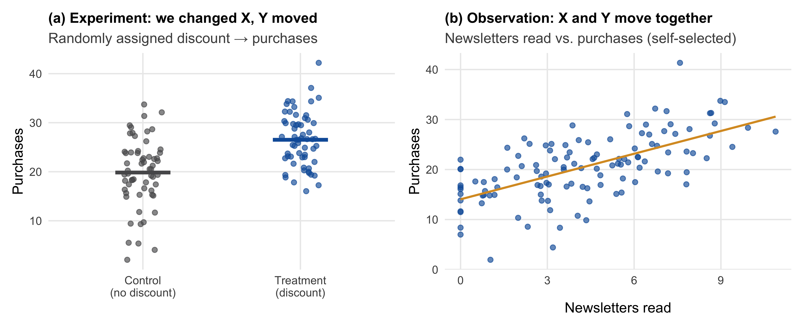
Both pictures are “positive results”. Both would look good on a slide. And notice: both have exactly the visual form of the eBay comparison in Figure 1.2 — two groups, a gap in means. Here is the twist: the data behind both panels were simulated with the same true effect of +3. Panel (a) recovers it. Panel (b) reports a difference of about +11 — because customers who subscribe to a newsletter differ from those who do not before any newsletter arrives.
The uncomfortable and important lesson: the difference between the two panels is invisible in the data. It lies in the data-generating process (DGP) — the real-world mechanism by which the numbers came into being. Two datasets that look alike can support completely different conclusions depending on how they were generated. This is why “let the data speak” is bad advice: data never speak about causation on their own. Throughout this course, the first question you should ask about any dataset is therefore not “what’s in it?” but “how did it come to be?”
1.4.3 What generates panel (b)
Figure 1.6 shows the DGP behind panel (b). The customer’s underlying brand interest makes people subscribe — and it also makes them buy. The observed difference of +11 is therefore a mixture of the true effect (+3) and a selection effect (about +8). Notice what is new compared with the eBay case: there, the direct arrow from ads to sales was essentially zero; here, the newsletter has a real effect. Confounding does not mean “no effect” — it means that the observed number mixes the effect with selection. And the figure already shows what randomization does: randomizing delivery — as in panel (a) — cuts the arrow from brand interest to newsletter delivery, and only the +3 remains (Section 1.6).
NoteUnder the hood: the simulation behind the two panels
Because the data are simulated, we know the true mechanism with certainty — we wrote it. The variable intent plays the role of brand interest. The only difference between the two worlds is how newsletter delivery (sub) is determined: by a coin flip in (a), by intent in (b). The effect of the newsletter on purchases (true_effect = 3) is identical in both.
Show the code
set.seed(42)
n <- 120
true_effect <- 3
# (a) EXPERIMENTAL data: delivery randomized (holdout among subscribers)
d_exp <- data.frame(sub = rbinom(n, 1, 0.5), intent = rnorm(n))
d_exp$purchases <- pmax(0, 20 + true_effect * d_exp$sub + 8 * d_exp$intent + rnorm(n, 0, 4))
# (b) OBSERVATIONAL data: delivery self-selected (subscribing driven by intent)
d_obs <- data.frame(intent = rnorm(n))
d_obs$sub <- rbinom(n, 1, plogis(1.5 * d_obs$intent - 0.2))
d_obs$purchases <- pmax(0, 20 + true_effect * d_obs$sub + 8 * d_obs$intent + rnorm(n, 0, 4))1.4.4 Four ways to get the same scatter plot
To make this more general, Figure 1.7 shows four scatter plots with similar positive correlations. All four are simulated — which is the honest way to teach this point, because for simulated data we know the true mechanism with certainty. Figure 1.8 shows the data-generating process behind each panel.
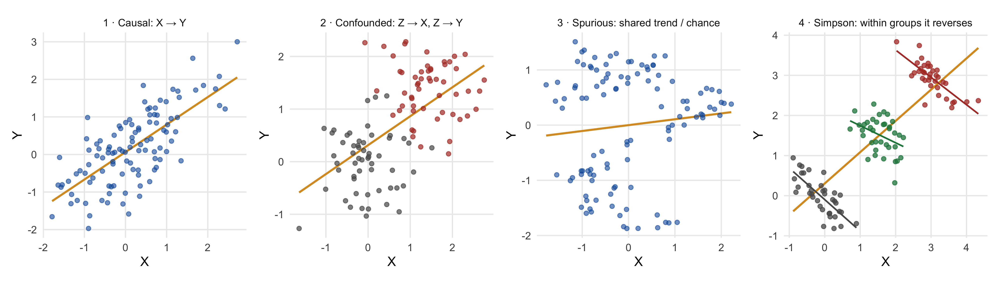
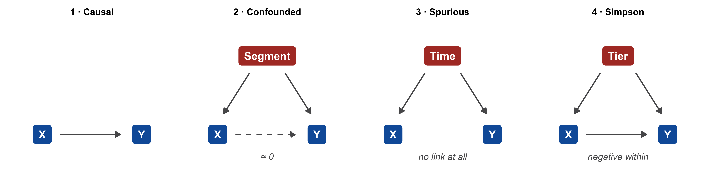
- In panel 1, X genuinely causes Y: intervening on X would move Y.
- In panel 2, the relationship is confounded: a third variable — here a customer segment — drives both X and Y (loyal customers receive more newsletters and spend more). The pooled cloud shows a clear positive relationship, but look at the colors: within each segment, X and Y are unrelated. If you intervened on X, nothing would happen to Y.
- In panel 3, the relationship is spurious: X and Y are two completely independent series that both trend over time — the Internet Explorer chart in miniature. Notice that the DGPs of panels 2 and 3 have the same shape: time is, in this sense, the ultimate confounder.
- In panel 4, confounding operates at full strength and produces Simpson’s paradox. Think of X as price and Y as units sold across three product tiers: higher tiers have both higher prices and more units sold, so the pooled slope is positive — but within every tier, the slope is negative. Aggregation can reverse the truth, not just inflate it.
A decision framing makes the point concrete. Suppose you increase X in each of the four worlds. In world 1, Y rises. In worlds 2 and 3, nothing happens. In world 4, Y falls. Four similar scatter plots, four different consequences of the same action. The plot shows the correlation; only the DGP says what X does to Y — and thus what happens if you act on X. This is the precise sense in which “correlation does not imply causation”: correlation is a property of the data; causation is a property of the process that generated them.
1.4.5 Reverse causality: who is causing whom?
There is one more way a correlation can mislead, and marketing data are unusually rich in it. Suppose you observe that regions with higher advertising spend have higher sales. The natural reading is that advertising drives sales. But many firms set advertising budgets as a percentage of (expected) sales — in which case sales drive advertising, and the correlation would appear even if advertising were completely ineffective. The same pattern of data supports two opposite stories:
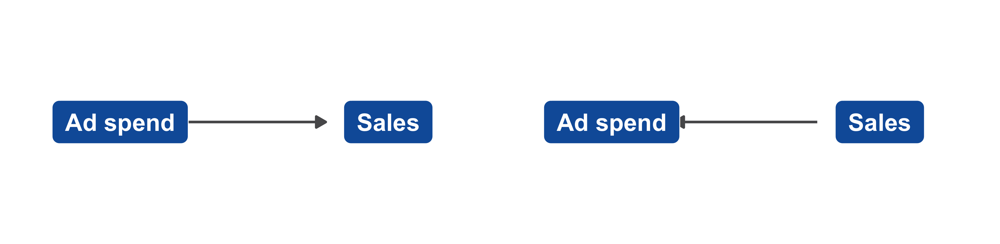
Because budgeting rules, targeting algorithms, and managerial reactions to performance are everywhere in marketing, reverse causality is a routine hazard in marketing data, not an exotic one. Whenever you see a correlation involving a variable that managers set in response to something, ask which way the arrow runs.
1.4.6 The classical conditions for causality
The methodological literature (Field et al. 2012) states three conditions that must hold for X to be accepted as a cause of Y:
- Concomitant variation — X and Y vary together as the hypothesis predicts. The data establish this directly: all examples in this section satisfy it — eBay’s dashboard, the newsletter gap, Internet Explorer and murders, all four scatter panels. It is the cheap condition, and precisely for that reason it proves nothing on its own.
- Temporal order — the cause precedes the effect. This is sometimes checkable in data, but the advertising-budget example shows how it can fail: sales also drive spending. (Note that the Internet Explorer chart satisfies conditions 1 and 2 and is still nonsense.)
- Absence of other possible causal factors — no alternative explanation accounts for the association. No dataset can certify this on its own: intent, segments, time, tiers…
The entire difficulty of causal inference lives in condition 3 — and the tools of this course (randomization, adjustment, and the designs discussed in Section 1.7) are all strategies for making it plausible. “Which condition does this analysis fail?” is a question worth practicing on every example in this chapter.
1.5 Variables and their roles
You now know that whether a comparison supports a causal claim depends on the process behind the data. To reason about such processes, it helps enormously to have names for the roles that variables can play. Think of them as the recurring cast of characters in every causal story. In this chapter your job is only to recognize them; the tools for handling each of them come in Modules 4–6.
1.5.1 The two lead roles
The dependent variable (DV) is the outcome: the quantity the manager ultimately cares about — purchases, churn, willingness to pay, clicks. The independent variable (IV) is the presumed cause: the variable whose influence we want to establish — a discount, ad exposure, a price change. In experiments, the independent variable under the researcher’s control is called the treatment; its values define the experimental conditions (e.g., treatment vs. control group).
A note on terminology. IV and DV are the general terms — they apply to observational data too, where nobody manipulates anything. “Treatment” is the experiment-specific name for the IV, and strictly speaking it earns that name only when the researcher sets it: the newsletter holdout of Figure 1.5 had a treatment; the self-selected comparison merely had an independent variable. (In econometrics, “IV” is also used as an abbreviation for instrumental variable; in this course, IV always means independent variable.)
Defining these two precisely — whose purchases, over what horizon, which discount — is half of research design (Section 1.8), and vagueness here is a reliable early-warning sign of a doomed analysis. “Does advertising work?” is not a research question. “Does exposure to the retargeting campaign increase the probability that a website visitor purchases within 30 days?” is: it names the treatment, the outcome, the unit of analysis, and the time horizon.
1.5.2 The villain: the confounder
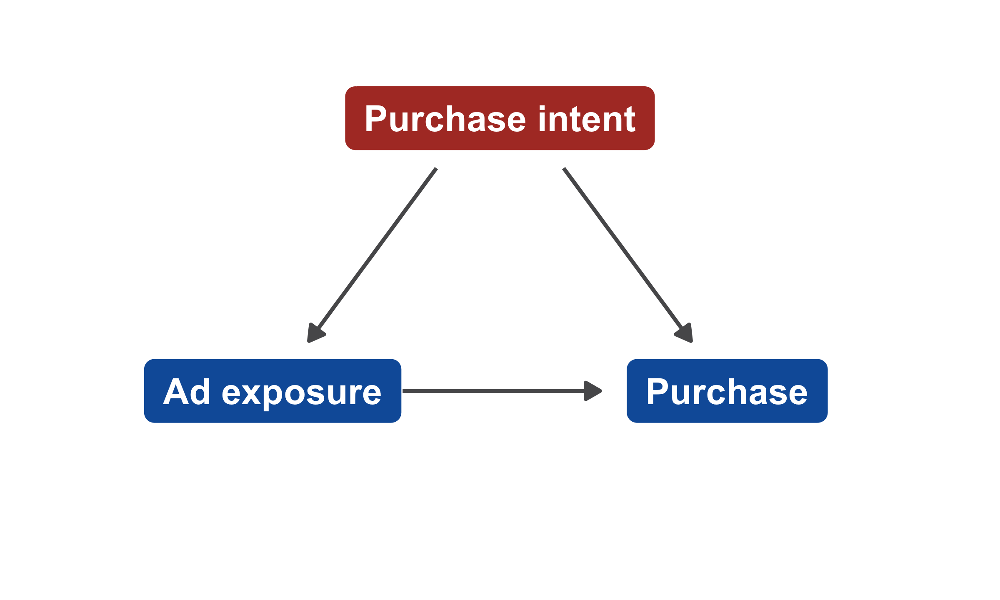
A confounder is a variable that causes both the treatment and the outcome. Confounders manufacture correlation without causation — panel 2 of Figure 1.7 was exactly this structure, and so was the eBay case: purchase intent caused people to search for eBay (and thus see the ad) and also caused them to buy. The apparent effect of the ad was, to a first approximation, entirely the work of the confounder.
When the confounding arises because units choose their own exposure — customers pick the channel through which they arrive, subscribe to the newsletter, install the app, join the loyalty program — the resulting distortion is called selection bias. In marketing data, it is the default, not the exception: almost everything customers do, they chose to do. In this course’s usage, selection bias is confounding with a choice mechanism: the confounder is whatever drives the choice. (There is a second kind of selection problem — selection into the sample, i.e., who ends up in your data at all: survey non-response, churned customers missing from the database. It returns when you design your own survey in the group project — who answers a survey is itself a choice.)
Confounders are the central villain of observational data analysis. They can be dealt with — if they are observed, they can be adjusted for, which is a large part of what regression is for (Module 5) — but as we will see in Section 1.6, the ones you cannot see are the ones that should keep you up at night.
1.5.3 Supporting roles: mediator and moderator
1.5.3.1 The mechanism: the mediator
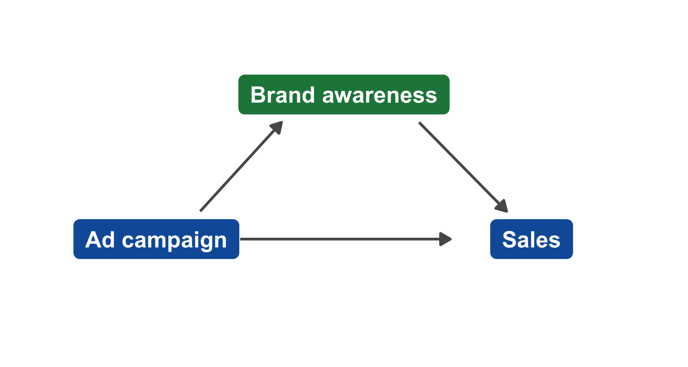
A mediator lies on the causal path between treatment and outcome: it is the mechanism — the how — through which the effect operates. An advertising campaign may increase sales by way of increased brand awareness; a price cut may increase repurchase by way of higher perceived fairness. Why should a manager care about the mechanism, and not just the total effect? Because the mechanism tells you what to optimize: if the campaign works through awareness, then creative that builds awareness is the design goal, and awareness is worth tracking as an early indicator. Mediation analysis — decomposing a total effect into its direct and indirect (mediated) components — is part of Module 6.
1.5.3.2 The qualifier: the moderator
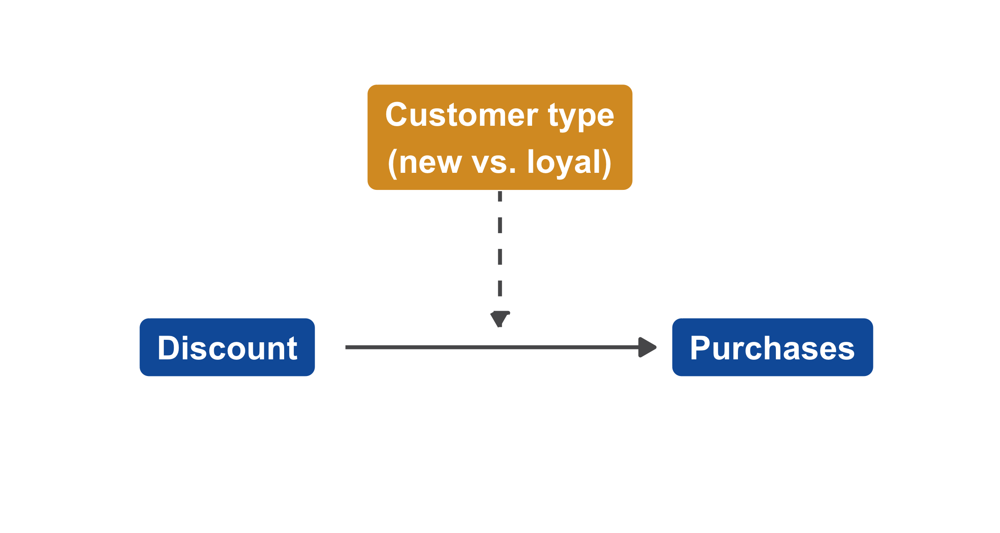
A moderator does not sit on the causal path — it changes the strength of the effect. “The discount increases purchases among new customers, but does nothing for loyal ones”: here, customer type moderates the discount effect. Notice the visual convention in the diagram: the moderator’s dashed arrow points at the causal arrow itself, not at a variable. Moderators answer the questions for whom? and under what conditions? — which is often exactly what a manager needs for targeting decisions. Statistically, moderation corresponds to an interaction effect, which you will estimate in Module 6.
1.5.4 The full cast around one causal question
Figure 1.14 assembles all roles around a single causal question. This figure will accompany us for the rest of the course — it reappears when we formalize these ideas in Modules 5 and 6.
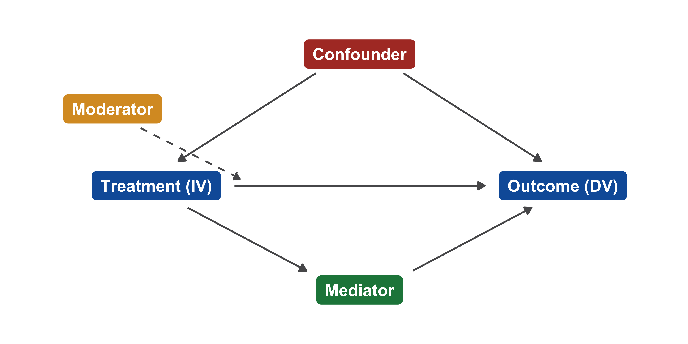
WarningA preview of a subtle danger
You might think the safe strategy is to “control for everything you can measure”. It is not. Adjusting for a mediator removes part of the very effect you are trying to measure, and adjusting for certain other variables (so-called colliders) can create bias out of nothing. Which variables to adjust for is a question about the causal structure, not about data availability — one of the most practically important lessons of Modules 5 and 6. For now, remember only: the roles matter, and “more controls” is not automatically better.
1.6 Randomization
We have established that causal questions are comparisons with counterfactuals, and that confounders are what make naive comparisons break down. Experiments — introduced by example in the eBay story — deserve their special status because randomization solves the confounding problem wholesale. As Box et al. (1978) put it:
“To find out what happens when you change something, it is necessary to change it.”
— Box, Hunter & Hunter (1978)
1.6.1 Randomization cuts every arrow into the treatment
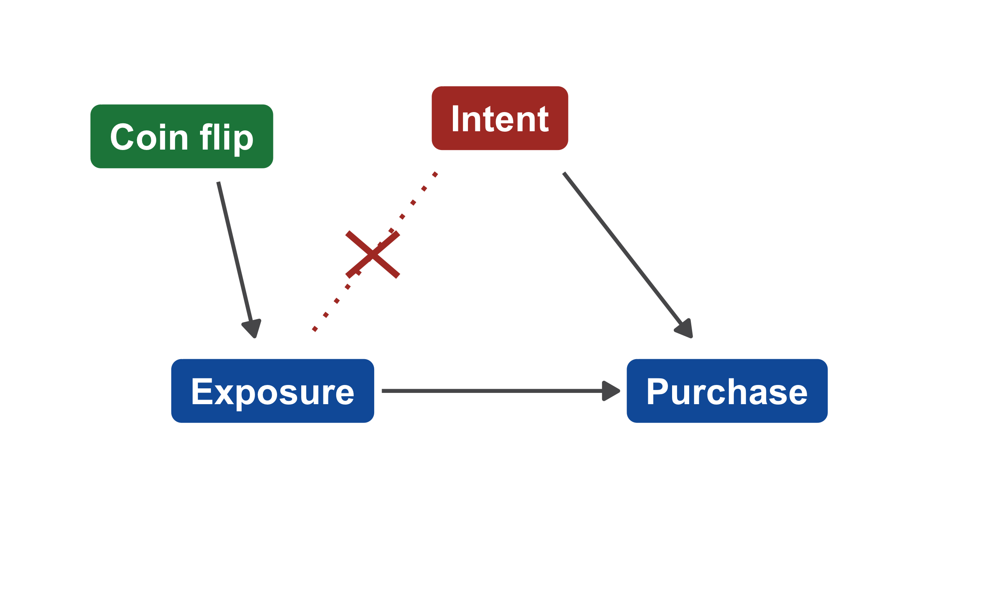
When treatment is assigned by a coin flip (or its digital equivalent), assignment depends on nothing else: not on intent, not on engagement, not on income, not on mood, not on anything a targeting algorithm might quietly use. In the language of Section 1.5: randomization cuts every arrow pointing into the treatment. Confounders may still affect the outcome — intent still drives purchases — but they can no longer differ systematically between the groups, and therefore can no longer masquerade as a treatment effect.
The classic texts describe this with two kinds of variation. Systematic variation is the difference in the outcome created by the treatment — this is what we want to measure. Unsystematic variation stems from everything else (age, mood, time of day, …) — and randomization spreads it evenly across the groups. The difference between the groups is therefore treatment effect + noise: no bias, and the noise can be quantified (Module 3). Randomization does not remove other influences on the outcome — it makes them unsystematic: noise instead of bias. Noise averages out as the sample grows; bias does not.
The consequence is what makes experiments the gold standard: the control group becomes a valid stand-in for the counterfactual. The treated and untreated groups are, in expectation, alike in every respect — including characteristics nobody measured, and characteristics nobody even thought of. That last clause is the remarkable part, and it deserves to be seen rather than believed.
1.6.2 “Balanced — even on what we never measured”
Figure 1.16 shows a simulation of 2,000 customers with six characteristics, one of which — purchase intent — we will pretend is unobservable, as it realistically is. In the left panel, customers self-select into ad exposure (as they did at eBay): the exposed and unexposed groups differ substantially, and they differ most on the variable we cannot see. In the right panel, the same customers are split by a coin flip: every characteristic is balanced, including the unobserved one.
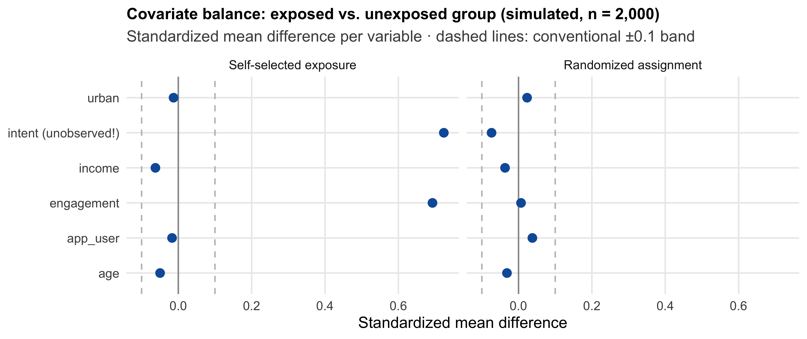
Pause on the right panel: the coin flip balanced intent without knowing that intent existed. Randomization is the only design that protects you against the confounders you have not thought of. This is why Angrist and Pischke (2009) write that “the most credible and influential research designs use random assignment”.
1.6.3 Two ways to randomize: between vs. within subjects
Randomized experiments come in two basic forms, which differ in what is randomized (Table 1.4).
| Between-subjects | Within-subjects | |
|---|---|---|
| Design | Each person sees one condition | Each person sees all conditions (repeated measures) |
| Example | Group A sees a targeted ad, group B a generic ad | Everyone rates ad no. 1, then ad no. 2 |
| Comparison | Across people: mean(A) vs. mean(B) | Within person: condition 1 vs. condition 2 |
| Strength | No carryover between conditions | Each person is their own control → far less noise, fewer participants needed |
| Watch out | Needs more participants | Order & carryover effects → randomize the order (counterbalancing) |
In a between-subjects design, randomization decides who gets which condition; in a within-subjects design, it decides the order of the conditions. The within-subjects idea — each person serves as their own control — is the closest real design to the impossible “same users, without ads” comparison of Table 1.1. Its weakness is that earlier conditions can influence later ones (think of taste tests or price judgments, where the first price anchors the second). The experiment in your group project will be a between-subjects design: the Qualtrics randomizer assigns each respondent to exactly one condition. The practical details follow in Module 4.
1.6.4 Why the industry runs on experiments
Causal inference is not academic hygiene — it is how the most valuable firms allocate their resources:
“Our success at Amazon is a function of how many experiments we do per year, per month, per week, per day.”
— Jeff Bezos
“At any given point in time, there isn’t just one version of Facebook running, there are probably 10,000.”
— Mark Zuckerberg
The A/B test is the industry name for a between-subjects randomized experiment, run continuously and at scale. The vocabulary of this section — treatment, control, between-subjects — is the daily operating language of these companies. (The same industry that produced eBay’s misleading dashboard also built the experimentation culture: the lesson of 2012 has been learned at scale.)
1.6.5 Guidelines for field experiments
Three guidelines help to design field experiments that deliver what they promise (see, e.g., Lambrecht & Tucker, 2016):
- Choose the unit of randomization. Finer units (users rather than regions) provide more statistical power — but this has to be weighed against logistics and spillovers. In digital environments, user-level A/B tests make fine granularity cheap. eBay randomized regions, not users: search-ad exposure cannot easily be switched off for individual users, and regional switching sidesteps the problem.
- Watch for spillovers and crossover. Spillovers occur when treated units affect untreated ones: product adoption spreads to friends; a tipping prompt in a ride-hailing app changes driver behavior for all riders (Chandar, Gneezy, List & Muir, 2019). If spillovers loom, randomize at a higher level (households, cities). Crossover occurs when a unit meant for the control group gets treated anyway (multiple devices, shared accounts).
- Complete vs. stratified randomization. Pure coin flips can leave small samples imbalanced by chance. Stratification — splitting units into homogeneous subgroups first and randomizing within each — is worth it when a covariate strongly predicts the outcome.
These guidelines double as a checklist for the experiment you will design in the group project.
1.6.6 The price of observational data
If experiments are so powerful, why does most analysis use observational data anyway? The statistician Andrew Gelman gives the honest answer:
“Given the manifest virtues of experiments, why do I almost always analyze observational data? The short answer is almost all data out there are observational.”
— Gelman (2010)
Experiments can be infeasible (you cannot randomize your brand’s reputation), unethical or commercially risky (customers resent randomized prices), too slow, or simply not what happened — the data you have are the data that exist. Working with observational data is therefore not a lapse of rigor; it is the normal condition of applied analytics. But it has a price, which Judea Pearl states in one sentence:
“Behind any causal conclusion there must be some causal assumption, untested in observational studies.”
— Pearl (2009)
ImportantThe key assumption — and its epistemic status
Causal conclusions from observational data require the assumption of no unobserved confounders: every variable that affects both the treatment and the outcome has been measured and appropriately adjusted for.
This assumption is untestable in principle. You can check balance on the variables you observed — but by definition, you cannot check it on the ones you did not. No statistical test, no matter how sophisticated, can certify the assumption; it can only be made more or less plausible through domain knowledge and design.
This is the fundamental asymmetry of the course: experiments buy this assumption by design; observational studies must argue for it. Whenever you read (or write) a causal claim based on observational data, the first question is: what is the argument that nothing unobserved drives both X and Y?
If one idea from this chapter survives into your professional life, it should be that boxed asymmetry — remember it whenever anyone says “we controlled for everything”. It is not a counsel of despair — Module 5 is devoted to making the argument as credible as possible — but it draws the line between what your data can show and what you must assume.
1.6.7 In-class reading: does personalization pay?
Digital advertising offers a particularly instructive case of these problems. Before reading on, read the article by Langhe and Puntoni (2021) in the Harvard Business Review (link; about 10 minutes).
TipReading questions: does personalization pay?
- According to its objective, what type of research question (Table 1.2) is being asked here — descriptive, predictive, causal, or prescriptive?
- What exactly makes it difficult to measure the effect of personalized ads on sales?
1.6.8 Threats to causal inference: who sees a personalized ad?
The objective is causal: do personalized ads change sales? But what advertising platforms’ dashboards deliver is descriptive and predictive — who clicked, who converted. Figure 1.17 shows why this gap matters. The targeting algorithm shows the ad to people already interested in the product category: the platform optimizes for finding exactly the users who would buy anyway. This is selection bias, machine-made: nobody chose anything — the selection happened inside the algorithm. Note the uncomfortable inversion: the better the targeting, the more severe the selection, and the more the reported lift overstates the causal effect.
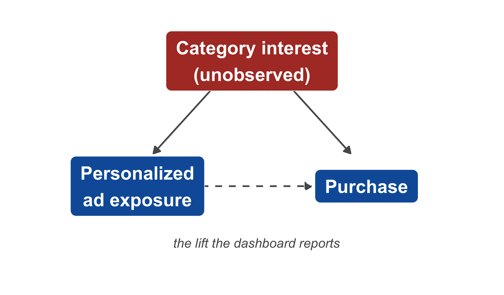
1.6.9 Even A/B tests can break: divergent delivery
Surely, you might think, the platforms’ built-in A/B testing tools solve this problem? Not necessarily. Braun and Schwartz (2025) show that ad platforms’ algorithms deliver different ads to systematically different mixes of users — even during A/B tests. You randomize users into “sees ad A” and “sees ad B”, but the platform’s delivery algorithm then decides who within each arm actually gets an impression — and since it optimizes delivery separately for each ad, ad A reaches one audience mix and ad B another. This divergent delivery confounds the effect of the ad content with targeting effects; the resulting imbalance can distort both the magnitude and the sign of the estimated difference between the ads. Platform A/B tools are therefore useful for picking the better-performing ad within the same platform — but they cannot reveal the causal effect of ad content across contexts, platforms, or audiences.
For your group project, this problem does not arise: in a Qualtrics survey experiment, there is no delivery algorithm between the randomizer and the respondent. That contrast is one reason why survey experiments remain a clean setting for learning experimental analysis.
1.7 Quasi-experiments
1.7.1 Between the poles: quasi-experiments
Experiments and observational studies are not a binary; there is fertile ground between them:
“Quasi-experimental tools mimic the random assignment that is inherent in lab experiments and that is often referred to as the ‘gold standard’ for identifying causal relationships.”
— Goldfarb and Tucker (2014)
In a quasi-experiment (or natural experiment), the “randomization” comes from an exogenous shock that is not controlled by the researcher — a market entry, a policy change, a staggered product rollout, a regulatory boundary. The units may still self-select into treatment and control, so the challenge is to argue that the shock credibly proxies for random assignment. In exchange, quasi-experiments often raise fewer external-validity concerns than lab experiments: they study real people, in real markets, spending real money.
1.7.2 A spectrum of designs
Table 1.5 places quasi-experiments on the spectrum of research designs.
| Experiment | Quasi-experiment | Observational study | |
|---|---|---|---|
| Who assigns treatment? | The researcher (coin flip) | An external event or rule | The units themselves |
| Marketing example | A/B test of a discount | A platform launches in some countries first | Newsletter readers vs. non-readers |
| Key requirement | Correct execution | “As-good-as-random” timing or rule | No unobserved confounders |
1.7.3 Example: does streaming cannibalize music sales?
An example from research conducted at our institute: Wlömert and Papies (2016) analyze the effect of music streaming services on (1) the demand for music in other distribution channels (downloads, CDs) and (2) total music industry revenues — a typical multi-channel distribution problem in marketing, in which Spotify’s market entry serves as a quasi-experiment.
A first look at the data seems encouraging for the industry: Spotify users spend more on music in other channels than non-users (Figure 1.18). Comparisons of exactly this kind (“users of X spend more on Y”) are routinely used by industry and journalists to argue that a new channel does not cannibalize existing ones — Netflix and movie theaters, Spotify and downloads. Is this evidence of a causal effect? Would you conclude that streaming boosts CD and download sales?
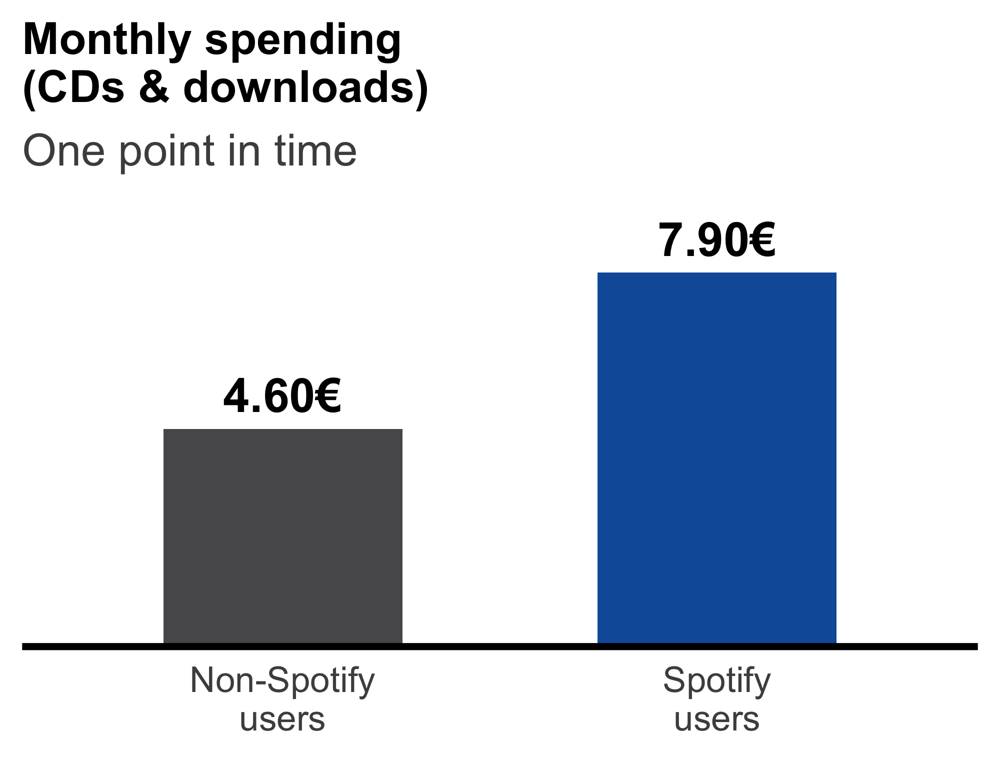
You now have the vocabulary to answer: who adopts Spotify first? Music enthusiasts — who already spent more on music before Spotify existed. The triangle of Figure 1.11 appears again, with music enthusiasm as the confounder. A comparison at one point in time — a cross-sectional design — cannot separate the enthusiasts’ high spending from an effect of Spotify.
1.7.4 Snapshots vs. following people over time
What helps is a longitudinal (panel) design, which observes the same units repeatedly (Figure 1.19). The Wlömert & Papies study surveyed the same consumers before and after some of them adopted Spotify. The enthusiasts’ high spending is a stable trait; by following people over time, we can see how each group’s spending changes — not just where it stands.
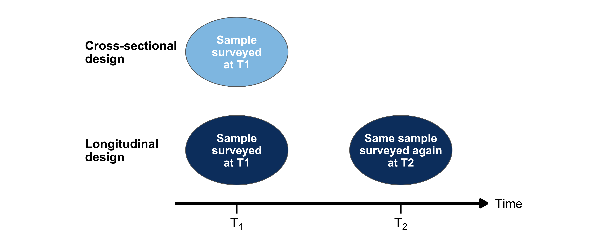
1.7.5 Difference-in-differences: the logic
The difference-in-differences (DiD) comparison is the workhorse of quasi-experimental analysis and one of the most widely used causal tools in industry and research (Varian 2016). Figure 1.20 shows its logic. The treated and control groups start at different levels — that is the selection problem, and DiD tolerates it. The key idea is to borrow the control group’s change over time: it tells us what would have happened to the treated group without the treatment. Adding this change to the treated group’s starting level yields the counterfactual (dashed line), and the treatment effect Δ is the gap between what happened and what would have happened.
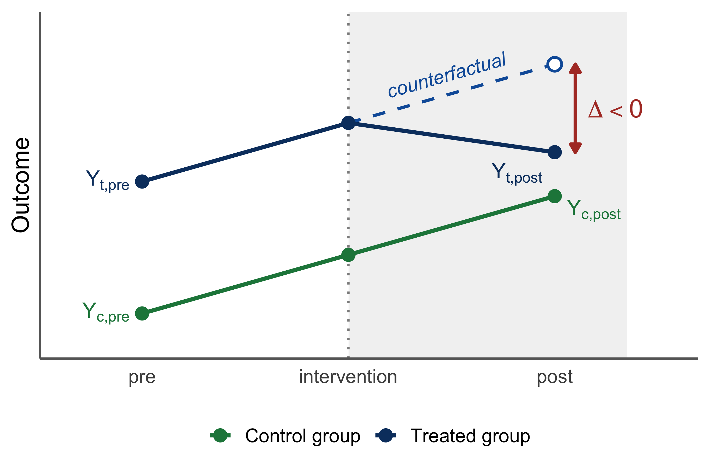
| Period | Treated | Control | Counterfactual |
|---|---|---|---|
| Before | \(Y_{t,\text{pre}}\) | \(Y_{c,\text{pre}}\) | \(Y_{t,\text{pre}}\) |
| After | \(Y_{t,\text{post}}\) | \(Y_{c,\text{post}}\) | \(Y_{t,\text{pre}} + (Y_{c,\text{post}} - Y_{c,\text{pre}})\) |
The effect of the treatment on the treated is therefore:
\[ \Delta = (Y_{t,\text{post}} - Y_{t,\text{pre}}) - (Y_{c,\text{post}} - Y_{c,\text{pre}}) \]
The name describes the computation: two differences over time, and the difference between them. The first difference removes stable differences between the groups (the enthusiasts’ higher spending); the second removes changes over time that affect everyone (the whole market moving).
ImportantKey assumption: parallel trends
Without the treatment, the treated group would have changed by the same amount as the control group. Differences in levels between the groups are fine; different trends are not. This is the assumption DiD needs instead of “no unobserved confounders” — weaker, but still an assumption that must be argued for.
1.7.6 DiD in action: the Spotify example
Figure 1.21 and Table 1.7 apply this logic to stylized figures from the Spotify study.
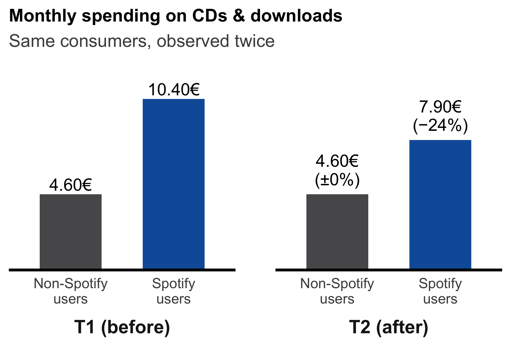
| Period | Treated (Spotify users) | Control (non-users) | Counterfactual |
|---|---|---|---|
| Before | 10.40€ | 4.60€ | 10.40€ |
| After | 7.90€ | 4.60€ | 10.40€ + (4.60€ − 4.60€) = 10.40€ |
\[ \Delta = (7.90€ - 10.40€) - (4.60€ - 4.60€) = -2.50€ \]
Same data, opposite conclusion. The snapshot says that Spotify users spend 3.30€ more per month than non-users (7.90€ vs. 4.60€); following the same people over time says that adopting Spotify reduced their spending on CDs and downloads by 2.50€ per month. Adopters were already heavy spenders before adopting (10.40€ vs. 4.60€) — that gap is selection. After adoption, their spending fell by 24%, while non-adopters’ spending remained flat. The snapshot measured who adopts, not what adoption does. The press comparisons mentioned above answered a descriptive question and claimed a causal one — the confusion of Section 1.3 once more.
The −2.50€ rests on the parallel-trends assumption: would the enthusiasts’ spending on CDs and downloads have stayed as flat as the non-users’ without Spotify, at a time when these channels were declining in general? The control group’s flat line is what licenses the claim — and it is the part of the analysis a critical reader should probe first.
Incidentally, the eBay regional experiment of Section 1.2 was analyzed with the same logic — comparing the change in sales in the switched-off regions with the change in the remaining regions. There, however, the regions had been randomized: randomization made the parallel-trends assumption hold by design.
We introduce quasi-experiments for two reasons. First, so that the spectrum in Table 1.5 completes your mental map from day one: experiment / quasi-experiment / observational study, ordered by how hard you must work to defend a causal claim. Second, because DiD-style arguments are everywhere in business practice (“sales rose in the test market by more than elsewhere…”), and you should be able to recognize — and question — them. The estimation of DiD models with panel data is beyond the scope of this course; if you want to go further, Angrist and Pischke (2009) is an excellent starting point.
1.8 From business problem to research design
The concepts are now in place; what remains is the craft of using them — translating a manager’s loosely stated problem into a design you can actually execute. This translation is a skill you will practice all semester (and in the group project, where you will design and field your own experiment). The template is simple; filling it in rigorously is not.
1.8.1 The translation template
Consider a typical request: “I want to know whether our loyalty program is worth the money.” A useful translation:
| Design element | Translation |
|---|---|
| Outcome (DV) | Customer contribution margin over 12 months |
| Treatment (IV) | Loyalty program membership |
| Unit of analysis | Customer |
| Question type | Causal — feeding a prescriptive decision (continue, expand, or cut the program) |
| Likely confounders | Purchase frequency and engagement before joining (heavy buyers join loyalty programs!) |
| Feasible designs | Randomize invitations to the program; staggered rollout across regions (quasi-experiment); observational comparison with adjustment (weakest) |
Three habits are worth building from the start. First, state the hypothesis as a precise, falsifiable claim — “program membership increases 12-month contribution margin” — rather than a vague aspiration (“the program creates value”). Precision dictates what data you need, which design is appropriate, and what analysis applies. Second, name the likely confounders before you see any data; if you cannot name them, you are not ready to interpret an observational comparison. Third, rank the feasible designs by the spectrum of Table 1.5 and ask what stands in the way of the stronger ones — often, a partial experiment (randomizing invitations, a pilot region) is feasible where a full one is not.
1.8.2 Your turn
TipPractice
Translate the following requests into the template above — outcome (DV), treatment (IV), unit, question type, two plausible confounders, and the best feasible design (experiment / quasi-experiment / observational): (1) “Should we invest more in influencer marketing?” (2) “Is our app driving retention, or do loyal customers just download the app?” (3) “Did last spring’s rebranding damage our sales in Germany?” We will discuss these in the session; note that (2) is reverse causality on a silver platter, and (3) permits no experiment at all — the event already happened, and happened everywhere at once. What could a credible comparison look like anyway?
1.9 The analytics workflow
A realistic picture of analytics work in 2026 has four steps: formulate the question → obtain and understand the data → analyze → communicate. Generative AI assistants (Claude, ChatGPT, Copilot and their successors) have become genuinely excellent at parts of this workflow, and this course treats them as what they are: standard professional tools that you are encouraged to use.
1.9.1 Where AI helps — and where it cannot replace you
But the steps differ sharply in kind, and this difference determines where an AI assistant accelerates your work and where relying on it hollows your work out:
| Workflow step | Nature of the work | An AI assistant… |
|---|---|---|
| Formulate the question & hypothesis | Judgment | can challenge and sharpen your thinking — but does not know your business, your data’s origin, or what is at stake |
| Choose the design & method | Judgment | can list options and trade-offs — but you own the assumptions and their defense |
| Write and debug R code | Mechanical | is excellent; use it freely, including in this course |
| Interpret the results | Judgment | can draft fluent text — but cannot verify a causal claim, and will happily narrate a confounded comparison as if it were an effect |
| Communicate to stakeholders | Mixed | is a strong writing aid — the framing and the accountability remain yours |
Notice which steps are “judgment”: they are exactly the contents of this chapter. An AI assistant will fix your ggplot error in seconds — and will, just as fluently, compute a beautiful answer to the wrong comparison without protest. The eBay analysts of Section 1.2 lacked no computational help; what was missing was the judgment layer. Nothing about better tools has changed this; if anything, cheap fluent analysis makes the judgment layer more valuable, because it is the only step that is scarce.
Hence the course policy, stated once and meant sincerely: use AI to accelerate your learning of the judgment steps, not to skip them. Practically: let an assistant explain error messages, draft code, and quiz you on concepts — and be suspicious of any output whose reasoning you could not reconstruct and defend yourself. The assessments in this course are designed so that the judgment steps are what earns the points; outsourcing them is therefore not a shortcut but a detour around the only part that will matter in your career.
The mechanics of R itself — installation, packages, first steps — are deliberately not part of this chapter: they live in the self-paced R onboarding module on the course site, which you should complete before the next session. Installation problems are precisely the kind of mechanical obstacle where your AI assistant of choice is an endorsed study aid.
1.9.2 One map for the whole course
You now hold the complete map of the course in your head; here it is on paper (Table 1.10). Each module answers one of the driving questions of Section 1.3. The dates of all sessions are listed in the Introduction.
| Module | Session(s) | Driving question | Contents |
|---|---|---|---|
| 1 · Questions, decisions & data | 1 | Which question am I really asking? | This chapter |
| 2 · Describing data | 2 | What is going on? | Data handling, summary statistics, visualization |
| 3 · Uncertainty | 3 | How sure can I be? | Sampling variation, standard errors, confidence intervals |
| 4 · Learning from experiments | 3–4 | Did it work? | Comparing groups; tests; running experiments well |
| 5 · Learning from observational data | 5–6 | What if we cannot randomize? | Confounding, regression as adjustment, categorical predictors, logistic regression |
| 6 · Mechanisms & heterogeneity | 7 | Why — and for whom — does it work? | Moderation (interactions) and mediation — in experiments and observational data |
| Survey design | 8 | How do I build a study that can answer my question? | Questionnaire design, measurement, embedding a randomized experiment |
| Group project coaching | 2 online sessions | Your own experiment, end to end | Questionnaire feedback (Coaching I); data analysis (Coaching II) |
In the group project, you will put the full arc into practice: designing a survey that contains a genuine randomized experiment, fielding it, and analyzing the resulting data. Everything in this chapter — counterfactuals, randomization, confounders, mediators and moderators, precise hypotheses — will turn from something you recognize into something you build.
Learning check
(LC1.1) An analyst reports: “Customers who use our app have twice the lifetime value of non-users — the app clearly pays off.” Which type of question (per Table 1.2) does the comparison actually answer, and which type does the conclusion claim? Name the most plausible confounder.
(LC1.2) A social media platform’s advertising dashboard compares the purchases of users who clicked your ad with the purchases of users who saw it but did not click. Is this comparison an experiment? What role (in the sense of Section 1.5) does “interest in the product” play here?
(LC1.3) Your CMO ran a 4-week price promotion in Vienna only. Weekly sales in Vienna rose from 200k€ to 230k€; in Graz (no promotion), they rose from 150k€ to 160k€ over the same weeks. What is the difference-in-differences estimate of the promotion effect? What must you assume for this estimate to be causal — and why might Vienna be a questionable choice for the pilot?
(LC1.4) Classify the role of the third variable in each statement — confounder, mediator, or moderator: (a) “The newsletter increases purchases because it increases site visits.” (b) “The discount works much better for students.” (c) “Customers who buy our cereal also buy more of our toys — households with more children buy more of both.”
(LC1.5) Which of the following statements are correct?
(LC1.6) Which of the following statements are correct?
References
Angrist, Joshua D., and Jörn-Steffen Pischke. 2009. Mostly Harmless
Econometrics: An Empiricist’s Companion. Princeton University
Press.
Blake, Thomas, Chris Nosko, and Steven Tadelis. 2015. “Consumer
Heterogeneity and Paid Search Effectiveness: A Large-Scale Field
Experiment.” Econometrica 83 (1): 155–74.
Box, George E. P., William G. Hunter, and J. Stuart Hunter. 1978.
Statistics for Experimenters. John Wiley & Sons.
Braun, Michael, and Eric M. Schwartz. 2025. “Where
A/B Testing Goes Wrong: How Divergent Delivery Affects What
Online Experiments Cannot (and Can) Tell You about How Customers Respond
to Advertising.” Journal of Marketing.
Field, Andy, Jeremy Miles, and Zoë Field. 2012. Discovering
Statistics Using r. Sage Publications.
Gartner. 2026. Gartner CMO Spend Survey 2026. Https://www.gartner.com.
Gelman, Andrew. 2010. “Experimental Reasoning in Social
Science.” In Field Experiments and Their Critics. Yale
University Press.
Goldfarb, Avi, and Catherine Tucker. 2014. Conducting Research with
Quasi-Experiments: A Guide for Marketers. Working Paper. Rotman
School of Management.
Hernán, Miguel A., John Hsu, and Brian Healy. 2019. “A Second
Chance to Get Causal Inference Right: A Classification of Data Science
Tasks.” CHANCE 32 (1): 42–49.
Langhe, Bart de, and Stefano Puntoni. 2021. “Does Personalized
Advertising Work as Well as Tech Companies Claim?” Harvard
Business Review.
Moorman, Christine. 2026. The CMO Survey: Highlights and Insights
Report, Spring 2026 (35th Edition). Https://cmosurvey.org.
Pearl, Judea. 2009. “Causal Inference in Statistics: An
Overview.” Statistics Surveys 3: 96–146.
Varian, Hal R. 2016. “Causal Inference in Economics and
Marketing.” Proceedings of the National Academy of
Sciences 113 (27): 7310–15.
Wlömert, Nils, and Dominik Papies. 2016. “On-Demand Streaming
Services and Music Industry Revenues — Insights from Spotify’s Market
Entry.” International Journal of Research in Marketing
33 (2): 314–27.
World Economic Forum. 2025. The Future of Jobs Report 2025.
World Economic Forum.